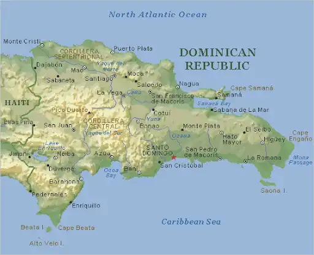

Dominican Republic

Dominican Republic is a tropical country located in the Caribbean, known for its beautiful beaches and culture, home to many famous baseball players, and its cuisine is varied and exquisite.
Data

| Area: | 48,671 km² |
| Population: | 11,532,151 |
| Capital: | Santo Domingo |
| Language: | Spanish |
| Currency: | Dominican Peso |
| Time Zone: | UTC-4:00 |
| Calling Code: | +1 |
| Internet TLD: | .do |